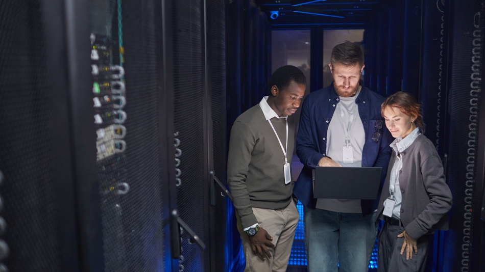

En Grupo‑1 somos un equipo especializado en soluciones tecnológicas avanzadas. Nuestro trabajo se basa en la ingeniería, la seguridad informática, el desarrollo de software y la administración de sistemas. Combinamos experiencia técnica con innovación para ofrecer servicios robustos, escalables y orientados al rendimiento.
Grupo‑1 nació con la misión de ofrecer soluciones tecnológicas profesionales accesibles para empresas y particulares. Con el tiempo, hemos ampliado nuestro catálogo de servicios, incorporando nuevas tecnologías y metodologías ágiles.
Proporcionar soluciones tecnológicas modernas, seguras y eficientes que impulsen el crecimiento digital de nuestros clientes.
Convertirnos en un referente tecnológico nacional, destacando por la calidad, seguridad y profesionalidad de nuestros servicios.
Contamos con especialistas en: